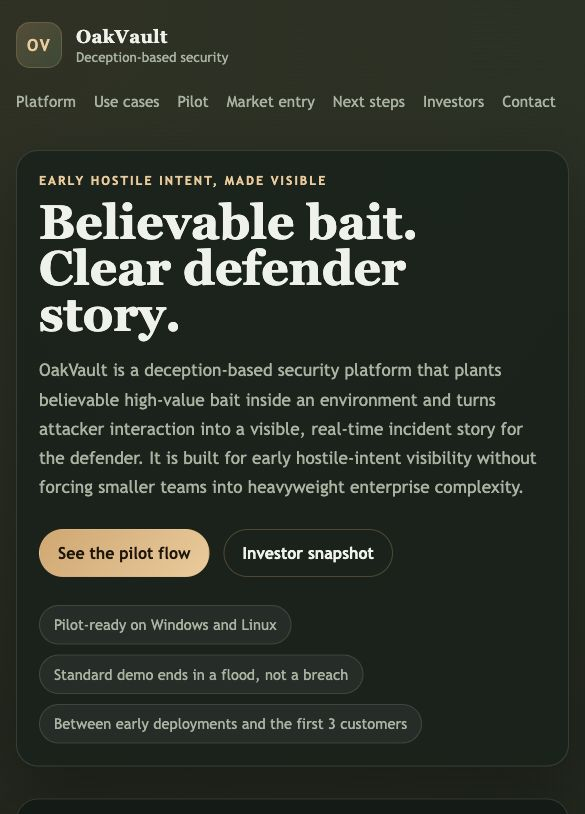

Actual public site ↗
Flagship
Cybersecurity
OakVault
Deception platform that turns decoy-vault activity into clear defender incident timelines.
- Spring Boot APIs secured with JWT.
- React/Vite dashboard for trap activity and top IPs.
- Layered vaults, flood lockouts, PDF evidence, SIEM export.
Java 17
Spring Boot
React 19
PostgreSQL
JWT
Live site ↗
Private repo